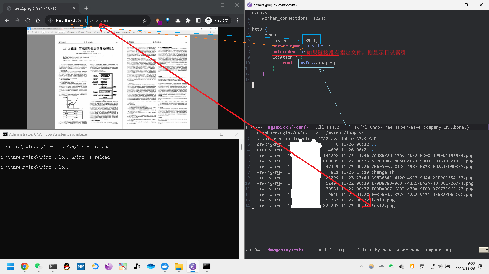
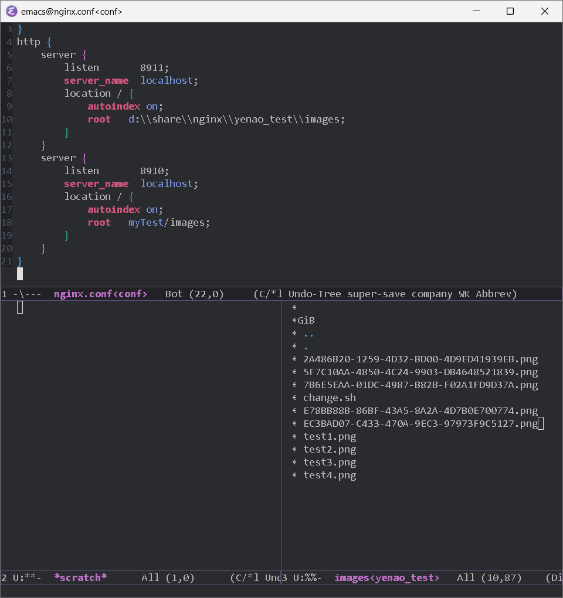
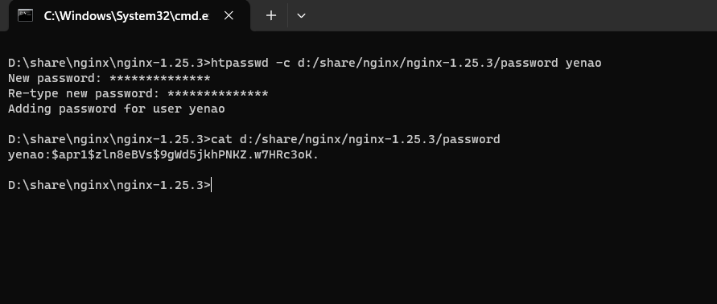
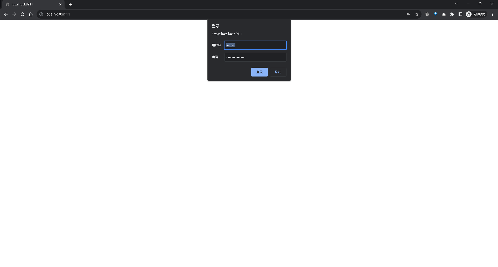

windows下nginx教程
windows安装nginx
运行nginx
下载下来的是一个压缩包，进入解压出来的nginx目录内，然后在当前目录运行cmd，运行方法是在当前的目录的地址栏将路径删掉，然后输入cmd并回车

修改nginx配置文件
在修改nginx配置文件之前，先前nginx配置文件拷贝一份，这样如果nginx没有配置好还可以用原来的nginx配置文件恢复
nginx的配置文件在nginx解压目录的conf目录，文件名是 nginx.conf

打开配置文件查看内容
|
|
准备工作
需要做的准备工作，在nginx的解压目录下新建一个myTest目录，再在myTest目录里建images子目录，然后存入图片，将图片命名为test2.png，也可以是其他命名，待会儿在链接里要访问的是test2.png

修改nginx配置文件内容
修改nginx配置文件内容如下
监听 8911 端口，通过 localhost 访问，将 / 映射到 myTest/images 下
此配置是nginx比较精简的配置，events相关的内容必须要有，否则重新加载nginx会报错，http块中的server块则是配置访问的资源了
|
|
然后在cmd窗口重新加载nginx

打开浏览器访问 localhost:8911/test2.png

windows配置其他目录
windows默认nginx运行程序所在目录为根目录，如果要配置其他路径的目录，需要配置绝对路径，并且对于windows的路径中的反斜杠要经过转义处理才能使得访问成功
|
|

配置多个端口显示不同的内容
|
|

给nginx网页设置密码
设置密码需要 htpasswd，该工具依赖 apache2，因此需要下载 apache2
下载apache2
官网链接：https://httpd.apache.org/
下载链接：https://www.apachelounge.com/download/
下载解压 apache2 的压缩包，在 apache2 的 bin 目录可以看到 htpasswd 程序
给网页设置密码
在cmd窗口执行行命令，会在nginx目录下生成一个password文件，这行命令最后是设定的用户名叫 yenao，输入这行命令后回车，终端会提示创建并确认密码
|
|
查看生成密码的过程和生成的用户名和密码

修改或删除密码
删除用户和密码
-D 删除指定的用户
|
|
修改用户和密码
|
|
在nginx的配置文件加入关于密码的配置
需要添加提示输入密码的信息和提供密码文件的路径
|
|
效果

给整个网站添加密码
给整个网站，跟添加网页密码的操作类似，只是需要将密码相关的配置放在http块下，而不是放在server块下
|
|
最终配置
|
|
linux下nginx教程
linux安装nginx
|
|
运行nginx
|
|
nginx修改配置后重新加载配置
|
|
配置方式跟配置方法参考上边windows的内容
注意事项
配置完后重新加载失败，需要注意有没有端口占用，最简单粗暴的方式就是将所有的nginx的进程给kill掉
|
|